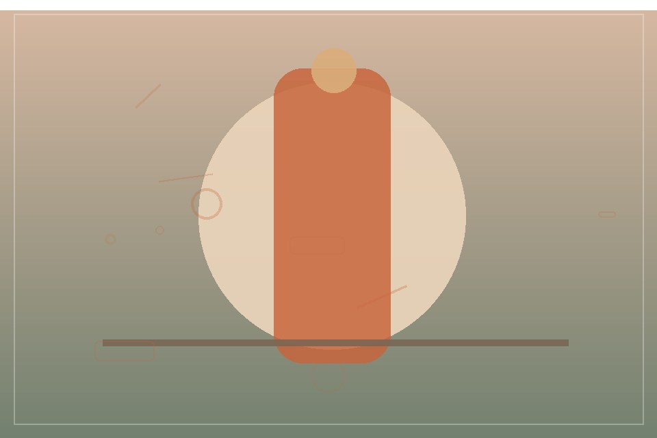
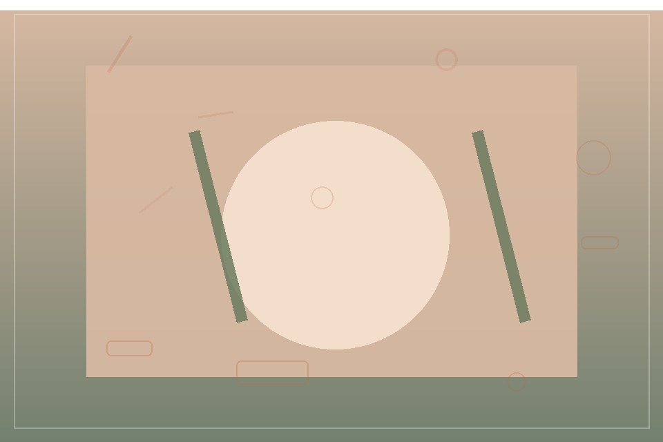

WEDDINGS
Weddings
Gentle direction and thoughtful coverage for a day that moves at its own pace.
Wedding · Portrait · Product · Event
Natural, considered photography for celebrations, people, and the details that make a story yours.
A few recent frames
A small selection of fictional sample images from the studio portfolio.
Made with care

WEDDINGS
Gentle direction and thoughtful coverage for a day that moves at its own pace.

PORTRAITS
Relaxed portraits shaped around your personality, light, and setting.
BRANDS & EVENTS
Clean, expressive images that bring the detail and atmosphere forward.
Kind words
“The photos feel like the day felt: relaxed, warm, and full of little details.”
“I felt at ease throughout the session and loved how natural the images came out.”
“The product set was polished and true to the character of our work.”
Let’s make something memorable